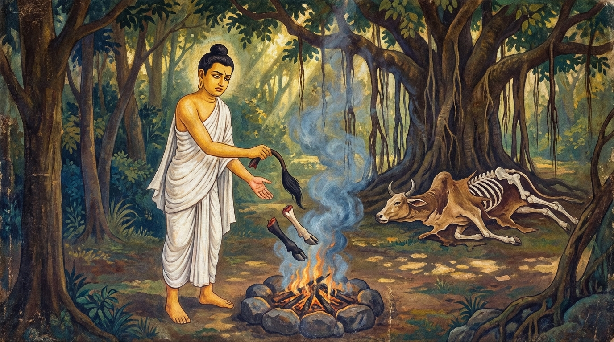

4. නඞ්ගුට්ඨ ජාතකය (144)
“බහුම්පෙතං අසබ්භිජාතවෙදා” යන මේ ජාතක ධර්ම දේශනාව ශාස්තෲන් වහන්සේ ජේතවනාරාමයේ වැඩ වසන සමයෙහි ආජීවකයන්ගේ මිථ්යා තපස් ක්රම අරබයා දේශනා කළ සේක. එකල ආජීවකයෝ ජේතවනාරාමය පිටුපස විවිධාකාර වූ මිථ්යා තපස්වල යෙදුණහ. බොහෝ භික්ෂූන් වහන්සේලා ඔවුන්ගේ:
- උක්කුටික වීර්යය හෙවත් උක්කුටිකයෙන් සිටීම,
- වවුල් ව්රතය,
- කටු යහනෙහි නිදීම,
- පඤ්චාතප තපස (ගිනි පසකින් සිරුර තැවීම)
ආදී නානාප්රකාර මිථ්යා තපස් ක්රම දැක භාග්යවතුන් වහන්සේගෙන් විමසා සිටියේ, “ස්වාමීනි, මේ මිථ්යා තපස් ක්රම නිසා මොවුන්ට කුසලයක් හෝ වැඩීමක් (අභිවෘද්ධියක්) ඇත්තේ ද?” යනුවෙනි. ශාස්තෲන් වහන්සේ වදාරන සේක්, “මහණෙනි, මෙබඳු මිථ්යා තපස් නිසා කුසලයක් හෝ අභිවෘද්ධියක් සිදු නොවේ. පෙර නුවණැත්තෝ ද ‘මෙබඳු තපස් නිසා කුසලයක් හෝ අභිවෘද්ධියක් වන්නේ යැ’යි සිතා උපන් දින ගිනි රැගෙන වනයට පිවිස, ගිනි පිදීම් ආදියෙන් කිසිදු අභිවෘද්ධියක් නො දැක, එම ගින්න ජලයෙන් නිවා දමා, කසිණ භාවනා කොට අභිඥා හා සමාපත්ති උපදවා බ්රහ්මලෝකයේ උපන්හ” යි පවසා අතීත කථාව ගෙනහැර දැක්වූ සේක.
යටගිය දවස බරණැස් නුවර බ්රහ්මදත්ත රජු රාජ්ය කරන කල්හි බෝධිසත්වයෝ උසස් බමුණු කුලයක උපන්හ. ඔහුගේ දෙමාපියෝ ඔහු
උපන් දිනයෙහි ම ගිනි දල්වා තැබූහ. ඔහුට වයස අවුරුදු දහසයක් වූ කල දෙමාපියෝ මෙසේ කීහ.
“පුත, මේ ඔබ උපන්
දිනයෙහි දැල්වූ ගින්නයි. ඉදින් ඔබ ගිහි ගෙයි වසනු කැමැත්තේ නම් ත්රිවේදය ඉගෙන ගන්න. එසේත් නැතිව බ්රහ්මලොකයෙහි
යනු කැමැති නම්, මේ ගින්න රැගෙන වනයට ගොස් ගිනි දෙවියන් පුදමින් මහා බ්රහ්මයන් සතුටු කොට බ්රහ්මලොක පරායණ
වන්න.”
ඔහු “මට ගිහි ගෙයින් පලක් නැතැ” යි පවසා උපන් දින ගින්න රැගෙන මහා වනයට පිවිස, අසපුවක් තනාගෙන ගිනි
දෙවියන් පුදමින් වනයෙහි විසීය. දිනක් ඔහු පසල් ගමකින් දක්ෂිණාව වශයෙන් ගවයෙකු ලබා, එම ගවයා අසපුවට ගෙන ගොස් මෙසේ
සිතීය: “ගිනි දෙවියන් හට ගව මස් කවන්නෙමි.”
එසේ සිතූ ඔහුට නැවත මෙසේ සිතුණි: “මෙහි ලුණු නැත. ගිනි දෙවියන්
ලුණු නැති මස් කෑමට නො හැකි වනු ඇත. එබැවින් ගමට ගොස් ලුණු ගෙනැවිත් ලුණු සහිත මස් ගිනි දෙවියන්ට
කවන්නෙමි.”
ඔහු ගවයා එතැන ම බැඳ තබා ලුණු ගෙන ඒම පිණිස ගමට ගියේය. ඔහු ගිය පසු වැදි රංචුවක් එතැනට පැමිණියහ.
ඔවුහු ගවයා දැක ඌ මරා, මස් පිස අනුභව කොට, වලිගය ද කෙන්ඩා සහ හම ද එතැන ම දමා ඉතිරි මස් සියල්ල රැගෙන ගියහ.
බමුණා පැමිණ වලිගය ආදිය පමණක් ඉතිරි වී තිබෙනු දැක මෙසේ සිතීය: “මේ ගිනි දෙවියා තමාට අයත් දේ පවා රැකගැනීමට අසමත්
ය. එසේ තිබියදී මා කෙසේ නම් රකී ද? මේ ගිනි පිදීමෙන් වැඩක් නැත. මෙයින් කුසලයක් හෝ අභිවෘද්ධියක් සිදු නො
වන්නේය.”
ගිනි පිදීමෙහි අදහස අත්හැර දැමූ ඔහු, “පින්වත් ගිනි දෙවියනි, ඔබ තමා සතු දේ පවා රැකගැනීමට අසමත් ව
සිටියදී මා කවදා නම් රකින්නෙහි ද? ඔබට පුදනු පිණිස මාංශ නැත. එබැවින් මේවායින්වත් සතුටු වන්න” යි පවසා වලිගය
ආදිය ගින්නට දමමින් මෙම ගාථාව ප්රකාශ කළේය.
“අසත්පුරුෂ වූ ජාතවේද (ගිනි දෙවියනි), යම් හෙයකින් අපි තමා සතු දේවත් රැකගැනීමට නොහැකි ඔබව වලිගයෙන් පුදමු ද, මේ (වලිගය) පවා ඔබට බොහෝ වැඩි ය. මස් ලැබීමට සුදුසු ඔබට අද මස් නැත. එබැවින් මේ වලිගය පමණක් පිළිගනු මැනව.”
එහි අර්ථ විවරණය මෙසේය:
‘බහුම්පෙතං’ යනු මෙපමණක් ද බොහෝ වැඩි ය යන්නයි.
‘අසබ්භි’ යනු
අසත්පුරුෂ වූ, යහපත් ගතිගුණ නැති තැනැත්තා ය.
‘ජාතවෙද’ යනු ගින්නට කරන ඇමතුමකි. ගින්න උපන් සැණින් ම
දැනෙන්නේ ය (ප්රකට වෙයි), එබැවින් ‘ජාතවෙද’ යැයි කියනු ලැබේ.
‘යං තං වාලධිනාභිපූජයාම’ යනු අද දින අපි
තමා සතු දෙය පවා රැකගැනීමට අසමත් වූ භාග්යවතුන් වහන්සේ (ගිනි දෙවියා) වලිගයෙන් පුදමු ද, එයත් ඔබට බොහෝ වැඩි බව
දැක්වීමයි.
‘මංසාරහස්ස’ යනු මස් අනුභවයට සුදුසු ඔබට අද මස් නැත යන්නයි.
‘නඞ්ගුට්ඨම්පි භවං
පටිග්ගහාතූ’ යනු තමා සතු දේ රැකගැනීමට අසමත් වූ ඔබ වහන්සේ (ගිනි දෙවියා) මේ කෙණ්ඩා, සම සහ වලිගයවත්
පිළිගනිත්වා යන්නයි.
මෙසේ පැවසූ මහාසත්ත්වයෝ ගින්න ජලයෙන් නිවා දමා, සෘෂි ප්රව්රජ්යාවෙන් පැවිදි වී, අභිඥා හා සමාපත්ති උපදවාගෙන ජීවිතාන්තයේ බ්රහ්මලොක පරායණ වූහ.

ශාස්තෲන් වහන්සේ මේ ධර්ම දේශනාව ගෙනහැර දක්වා ජාතකය සමාධාන කළ සේක.
“එකල ගිනි නිවූ තාපසයා වූයේ මම ම වෙමි.”
සිව්වන නඞ්ගුට්ඨ ජාතක වර්ණනාව නිමාවිය.